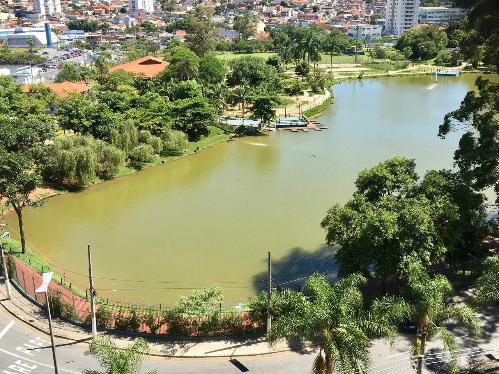
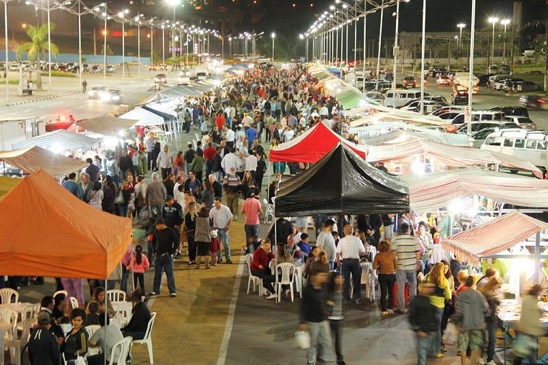

Barueri
Barueri é uma cidade localizada na região metropolitana de São Paulo, Brasil. Conhecida por seu desenvolvimento econômico e infraestrutura moderna, Barueri oferece diversas atrações turísticas, como parques, centros culturais e eventos ao longo do ano. A cidade também é famosa por abrigar o Alphaville, um dos maiores centros empresariais do país.
Atrações em Barueri
- Parque Municipal Dom José
- Teatro Municipal de Barueri
- Centro Cultural Aldeia de Barueri
- Shopping Tamboré
- Alphaville
Eventos em Barueri
- Festival de Inverno de Barueri
- Feira de Artesanato
- Eventos culturais no Teatro Municipal
- Shows e apresentações no Centro Cultural Aldeia